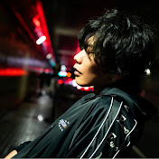

NewJeans的Instagram
NewJeans的Instagram
音樂無分國界，講求的是意境和其中的感情！仰賴偉大的現代科技，現在沒有你聽不到的歌，只有你沒聽過的歌。
無論什麼語言，什麼風格，好聽的歌總能為人帶來感動。雖說好東西私藏才合乎人性，但好音樂只有自己欣賞，身邊沒有人能產生共鳴也令人感到寂寞。
所以！藉這次機會介紹十首本人精挑細選的好歌和一些好樂隊歌手，分享快樂！
icyball冰球樂團是來自台灣的獨立樂隊。樂隊成立在2013年。具有濃烈七零，八零年代色彩，卻又不失現代潮流風格的音樂是他們最大的特色。一向對台灣獨立音樂的印象就是文青，浪漫帶點厭世，是時下emo年青人的最愛。但冰球樂團成功讓我放下了這個刻版印象。主打輕快可愛的旋律和有點迷幻的mv意外地有中毒性，有讓人一首歌一首歌聽下去的魅力。冰球樂團的歌詞大多都細膩輕柔，主唱溫柔有力的唱腔更將這優點發揮得更好。
“醉後喜歡我”是冰球宇宙三部曲的首部曲，帶點醉意的浪漫情歌描述了主人公的糾結和心動。復古的tone和groovy的音樂更為三部曲開了個好頭。希望2023年能讓更多人認識這隊來自寶島的寶藏樂隊！
icyball冰球樂團的YouTube icyball冰球樂團的Instagram
SixTONES是日本著名男偶像公司“傑尼斯”旗下的男子組合。組合名裏的“i”和“x”不發音，讀作"Stones"，意指六名成員都是原石。出道於2019年，與公司旗下其他藝人不同，他們走的路線並非在日本最受歡迎的王道閃亮亮王子風，而是比較特別，注重音樂性多於舞台表演的風格。“人人人”取名於日本一個習俗。相傳無論在面試或考試前，覺得緊張的時候，只要在手心畫人字，再將人字”吞“下，將動作重複三次就可以消除緊張了。
至於為什麼特意選了”人人人“這首歌，除了因為我喜歡以外，主要是“人人人”這款以rap為主的歌曲在傑尼斯系統內比較少見，也能讓平時不是負責rap的成員也能展現他們的實力，為粉絲帶來新鮮感時也能吸引喜歡其他音樂風格的人。感興趣的話也能去看看SixTONES其他舞台，保證你能滿意喔！
SixTONES的YouTube SixTONES的Instagram
Wasia Project是一隊有英國女孩和華裔男孩組成的兄妹檔樂隊。純屬個人臆測，但隊名“Wasia Project”應該取了"West"的"W"和"Asia"一詞組成"Wasia"，來突顯兄妹倆成長自中西混合的環境吧。MV裏的取景也在英國地鐵站和唐人街來回切換，更能體現樂隊的世界觀。
Petals On The Moon, 月亮上的花瓣，一本愛月之人描述月亮之美的詩集亦以此為名。兩人親自作詞作曲，簡單的鋼琴和跳動的節奏，樂器單一使旋律魅力更突出。和活潑的節奏相反，歌詞帶點現實的哀愁。但兄妹倆寄悲傷致月亮，希望大家即使覺得空虛也要自憐自愛，像月亮上的花瓣般活着。
Wasia Project的YouTube Wasia Project的Instagram
說到Kpop界，不得不提的最強怪物新人非New Jeans莫屬。出道於2022年，5位成員平均年齡16歲。出道專輯《New Jeans》四首歌席捲韓國樂壇，更橫掃各大頒獎禮獎項。
New Jeans音樂中所含蘊的青春期少女氣息正是她們收穫如此人氣的原因之一。而其中以《Ditto》的概念和故事最為出色。MV的A side和B side述說了同樣故事裏截然不同的兩面，唯一相通的，就是透過畫面裏那份屬於少女的朦朧夢幻校園回憶。琅琅上口的歌詞讓不會韓文的我在聽過一兩次就能哼上幾句，帶點House復古風的音樂整好趕上了Y2K（1990-2000年代的風格）的潮流，也難怪《Ditto》能紅遍全球。
NewJeans的YouTube
NewJeans的Instagram
Cozy Syndrome是一隊香港女子樂隊。跳脫“本地樂隊”的語言限制，Cozy Syndrome分別有英語，日語和廣東話的原創歌曲。深受日本文化影響，Cozy Syndrome的風格比較日系，在YouTube頻道上亦不時有翻唱日本歌手的作品。
前陣子有幸聽過她們的現場表演，主唱Asana甜而不膩，柔而有力的嗓音給我帶來了很大震撼。當時她們表演的正是《沒遺憾放任》一曲。我一向認為廣東話這語言和日系青春疼痛搖滾搭不上邊，但經歷那場表演後證實我錯了，《沒遺憾放任》就是成功的日系青春疼痛搖滾廣東話歌。說到底，五個女生盡情做喜歡的事，努力朝同一個方向進發，本身在香港組樂隊這件事就足夠青春了。最後最後，真的推薦去聽她們的現場表演。擠在小小的會場裏，由音響轟炸自己耳朵，才能最大程度的的感受她們的魅力。
CozySyndrome的YouTube CozySyndrome的Instagram
「米津出品，必屬佳品。」有“日本最強音樂才子”之稱的米津玄師在2021年為劇集《機動搜查隊404》寫了這首歌作為主題曲。我是經由劇集才發現到這首好歌的。與劇集氛圍一樣，帶有疾走感和夾雜着些少淒涼氣氛的節奏和劇情契合度十足，替劇集生色不少。還記得我看《機動搜查隊404》是兩年前的冬天，自此對《感電》啲愛便一發不可收拾。2021年的年末和2022年的年頭就靠它填滿了我的生活。到現在再聽這首歌，屬於冬天的冷空氣仍縈繞在鼻腔。米津玄師著名於歌詞裏獨特的語彙以及冷門文學作品的引用。這些地方也體現到米津玄師不單單只是才子，也在作品上花了許多巧思，是全心尊敬喜愛創作的音樂人。
米津玄師的YouTube 米津玄師的Instagram
Drama Store是其中一隊我後悔太晚認識的樂隊。在我終於在音樂開邂逅到他們時，他們就宣布了解散，甚至連解散演唱會的最後一場也完結了。《象形圖》就是他們發佈的最後一首歌。雖然在Drama Store的作品裏我最喜歡的不是這首，他們最出名的歌也不是這首。但作為姍姍來遲的粉絲，一個遲到的歌迷，他們的最後一首歌對我來說意義重大。撇開什麼最後的歌不說，《象形圖》還是延續了Drama Store主打清新甜甜情歌的風格，MV劇情仍舊最後帶來反轉。留言區亦有粉絲感歎「果然Drama Store的MV不會只停留在甜甜戀愛啊」諸如此類。雖然不能以現在進行式去享受充滿心思的MV和認真製作的音樂，但仍慶幸我發現了這隊如此合我口味的樂隊。人散但曲仍未終，讓我繼續永遠享受好音樂吧！
DramaStore的YouTube DramaStore的Instagram
非理想愛人是第一首能讓我如此真誠地感謝隨機播放功能的歌。一開頭的結他已經讓我毫不猶豫將歌加進了歌單。Pandora潘朵拉樂隊同樣是本地的獨立樂隊，成立於2010年，卻在2018年才出道。而樂隊名“潘朵拉”來自希臘神話潘朵拉盒子，盒子釋出了絕望到世上，只留下希望於盒內。Pandora樂隊的歌曲有些像非理想愛人一樣，宣洩對現實的不滿或委屈，亦有些溫柔的歌，為歌迷帶來慰藉。這也呼應了同時有絕望和希望意味的“潘朵拉”一詞。
Pandora樂隊的YouTube Pandora樂隊的Instagram
本來五個人的樂隊因要參加音樂節，才臨急臨忙想了個名字，於是這樣，”Kowloon K“就誕生了，帶著“求其”的含意。雖說取名求其，但他們做起音樂來可不馬虎！隨意和即興中亦帶有自己的堅持和風格，他們正朝糅合city pop和jazz的風格闖出屬於自己的新天地。主音Charlie可愛的女聲為歌曲帶來一份虛幻感，在“明天世界或到末日”尤其明顯。“明天世界或到末日”收錄於indie mixtape《EUM001:ups and downs》。合輯收錄了來自12個不同音樂單位的歌，歌曲從《搶耳音樂廠牌計劃2021/22》中精挑細選，而Kowloon K就是其中一個單位。這也證明了他們的實力，雖然“求其”，但絕對不馬虎！
KowloonK的YouTube KowloonK的Instagram
來到了最後，思來想去還是選了平井堅的Pop Star畫下句點。要說平井堅是我音樂啓蒙之父也不過分，畢竟我是聽着他的歌長大的。我爸爸是平井堅的歌迷，也鍾情日本流行樂。也許是耳濡目染，也可能是遺傳，我也對J-pop情有獨鍾。平井堅屹立在日本歌謠界多年。每次看見平井堅就會感歎時光過得真快。由我八個月大到八歲再到十八歲，他仍有新創作，仍敬業地再做音樂。Pop Star也從我爸爸的mp3裏走到我手機。飲水也要思源，做人迷失了偶爾就會到原點看看，而Pop Star和平井堅就是我的原點，每次聽也總能有新的體驗和感受。這首歌於我就是不會變質的心靈雞湯，也是我的音樂啓蒙之父。Pop Star不死！永續平井堅！